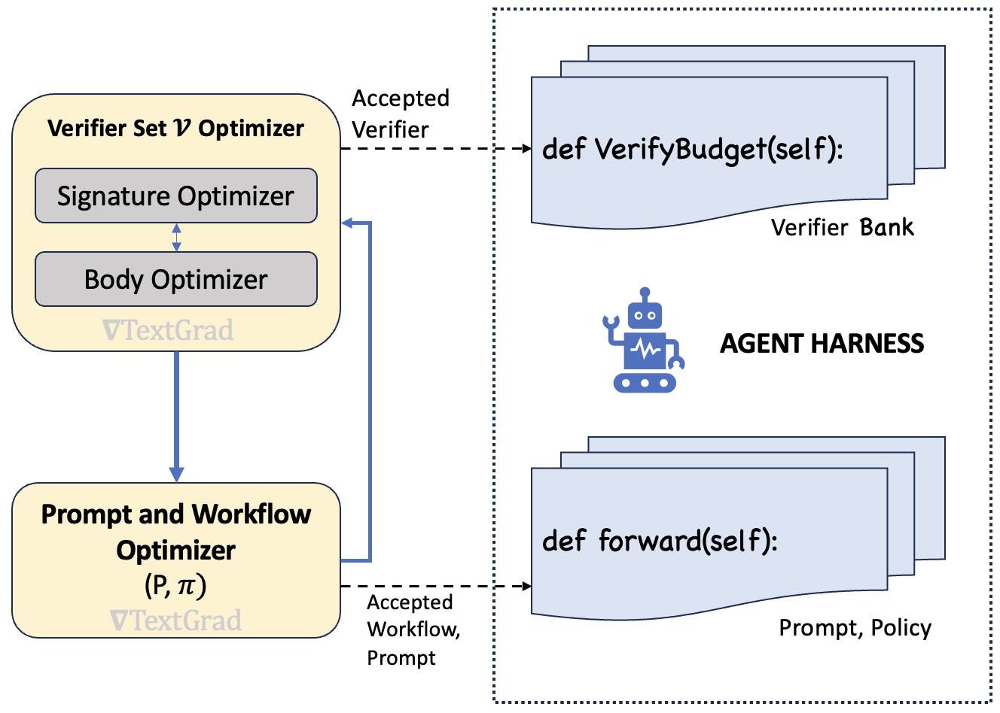

SBCO: Self-Supervised Verifier-Grounded Harness Optimization for Planning Agents
TL;DR
- "SBCO: Self-Supervised, Verifier-Grounded Harness Optimization For Planning Agents" (arXiv 2608.10157; Vivek Kulkarni, Sudipta Paul, Aounon Kumar, Nicholas Tzou, Srinivas Chappidi — affiliations not stated in the HTML render) argues that for non-coding tasks, Gödel-machine-style self-referential self-improvement is the wrong tool: the meta-agent should stay fixed, and what should be learned is a decomposed bank of per-constraint verifiers plus a repair policy, via approximate block coordinate ascent with textual gradients.
- Everything is self-supervised: verifier quality is F1-scored against positive/negative examples mined from a baseline run of the agent itself (acceptance gate: precision ≥ 0.80, recall ≥ 0.55), and the policy is graded by the benchmark's own black-box reward. No human labels, no population of self-modifying agents.
- On DeepPlanning's Travel and Shopping domains, SBCO matches or beats a domain-customized Huxley Gödel Machine (HGM-C) — Travel composite 84 vs 83, Shopping match 94 vs 91, case accuracy 79 vs 70 — while generating 733/989 plans during optimization vs HGM-C's 4000 (the 4–5.5× compute claim). Naive HGM at 8000 plans barely moves.
Why this matters
The Darwin and Huxley Gödel Machines made "the agent edits its own code" the charismatic megafauna of self-improvement research. But their trick depends on a quiet alignment assumption the paper (following the Hyperagents analysis) states cleanly: self-reference works when the competence the agent is scored on coincides with the competence it needs to edit itself. That holds for coding agents — a better coder is a better agent-editor — and generally breaks elsewhere. A better travel planner is not thereby a better harness engineer.
The standard escapes are to hand-craft a fixed meta-agent per domain, or to give the meta-agent meta-cognition and let it self-modify too. Both are expensive population searches over candidate agents, and Hyperagents' own result is that meta-cognition mainly buys cross-domain transfer, with no significant task-performance gain over a customized fixed meta-agent. SBCO's bet is that for planning tasks with explicit constraints, the bottleneck is not the sophistication of the improver but the structure of the improvement signal: decompose verification per constraint, ground it in the agent's own graded outputs, and a boring fixed optimizer gets you to the same frontier at a fraction of the cost.
For this tracker, that's a directly load-bearing data point: it's the "you don't need self-reference, you need better credit assignment" position in the harness-optimization debate, and it lands on the same side as the verifier-bottleneck argument — compute buys proposals, verifiers buy knowledge.
The core idea
The harness is a tuple \((\mathcal{P},\mathcal{T},\mathcal{W})\): prompt, frozen tools, and workflow, with the workflow partitioned into a verifier bank \(\mathcal{V}\) and the executed policy \(\Pi\). SBCO maximizes expected benchmark reward over the optimizable blocks (the paper states this inline; the max-over-blocks rendering is mine):
where \(x\) is a task instance, \(o\) the produced plan, and \(R\) the black-box evaluation suite's reward. The optimizer alternates blocks: (a) optimize \(\mathcal{V}\) holding \(\mathcal{P},\Pi\) fixed, then (b) optimize \(\mathcal{P},\Pi\) holding \(\mathcal{V}\) fixed — approximate block coordinate ascent, with each block improved by TextGrad-style textual gradients from a fixed critic/strategist.
The verifier block has its own nested coordinate structure. Each constraint \(c\) gets a verifier with a signature block (input/output types and semantics) and an implementation block (the function body), optimized one-while-fixing-the-other. Crucially, verifier quality has a cheap self-supervised surrogate: run the baseline agent, use the evaluation suite's error descriptions to label which constraints passed or failed, and score each candidate verifier's precision/recall against that self-constructed set. A verifier enters the bank only if it clears the reliability gate (equation reconstructed from the paper's prose; thresholds are the paper's):
Constraints whose signal simply isn't extractable from available fields stay out of the bank — the policy is then told, in effect, which checks it can trust.
How it works

Figure 1 from the paper: SBCO alternates between (a) optimizing the verifier set \(\mathcal{V}\) with \(\mathcal{P},\Pi\) fixed and (b) optimizing the prompt and policy with \(\mathcal{V}\) fixed; accepted verifiers and accepted workflows are deposited into the harness on the right.
Inner optimizer: tactical refinement + strategic pivots. Every block is improved by the same fixed meta-agent routine: generate a candidate, grade it (F1 for verifiers, benchmark reward for the policy), take a textual-gradient step from the grade report, keep-best so a block never regresses. If several tactical iterations fail to clear the gate, the strategist sees all prior strategies and their failures and either proposes a structurally new approach (different tool, different algorithm) or declares an information ceiling. Because verifier F1 is a surrogate rather than the final reward, downstream phases can escalate — the policy optimizer can flag a mismatch and re-open an already-accepted verifier.
The policy block. With the bank fixed, \(\Pi\) is free-form code deciding how to use the verifiers — typically verify-and-repair. At inference, every repair re-runs the verifiers and is kept only if it strictly shrinks the trusted-fail set with no regressions, with at most two replans before reverting.
# SBCO outer loop (fixed meta-agent M; E=3 epochs, T=5 tactical steps, ≤2 pivots)
V ← ∅ ; Π ← no-op seed policy
for e in 1..E:
for each active constraint c: # verifier block
σ_c ← BlockOptimize(signature of c)
φ_c ← BlockOptimize(implementation of c | σ_c)
if P(φ_c) ≥ 0.80 and R(φ_c) ≥ 0.55: # reliability gate vs
V ← V ∪ {compile(φ_c)} # self-labeled examples
Π ← BlockOptimize(policy | V) # graded by benchmark reward
if Π's optimizer flags a verifier mismatch: re-open that constraint
BlockOptimize(block): # tactical + strategic
b* ← seed
for pivot p in 0..2:
if p > 0: strategy ← Strategist(all prior strategies + failures)
for t in 1..T:
b ← Generate(strategy); g ← Grade(b)
if g > g(b*): b* ← b # keep-best ratchet
if MeetsGate(g): return b*
strategy ← TextGradStep(critic, b, GradeReport(g))
if accepted or strategist declines to pivot: break
return b*
The learned artifacts are worth reading closely. On Travel, the policy is LLM-replan-centric with tiered reliability gating: it acts on hard-constraint verifiers only at precision ≥ 0.98 and on commonsense verifiers only at ≥ 0.999 (and only four named ones), then repairs in three stages — a deterministic code patch, one batched LLM replan listing all trusted failures plus the passing checks to preserve ("copy exact literals verbatim"), and a narrow commonsense replan only if no hard failures remain. On Shopping, verifiers identify the correct products as a side-effect, so repair collapses into near-deterministic code edits to the cart.
Results
Setup: DeepPlanning's two long-horizon constraint-planning domains (Travel itineraries with budget/hotel/transit constraints; Shopping carts against a product catalog). Task agent GPT-5.4-mini, critic GPT-5.4-medium; scores are means of two runs; evaluation follows DGM/HGM's train-on-benchmark protocol (the defense: verifiers are general artifacts like "is the chosen hotel the cheapest of the required brand?", not per-instance lookups).
- Travel: composite 84 (SBCO) vs 83 (HGM-C, hand-customized meta-agent) vs 77 (naive HGM) vs 76 (baseline); case accuracy 30 for all improved methods. Budget: 733 plans vs 4000 (HGM-C) and 8000 (HGM).
- Shopping: match 94 vs 91 (HGM-C) vs 83 (HGM = baseline, unmoved at 8000 plans); case accuracy 79 vs 70 vs 50. Budget 989 vs 4000/8000.
- Overfitting check: train/validation gap negligible or favors validation (Travel 84.3/83.9; Shopping 93.7/94.8).
- Transfer: the GPT-learned verifiers+policy applied as-is to a Mistral task agent gain +9.9 (Travel, 32.2→42.1) and a striking +32.1 (Shopping, 62.3→94.4) — harness improvements are portable artifacts. But re-running SBCO from scratch on Mistral (41.8) can't approach GPT's 84.3: verify-and-repair recovers violations the agent can fix once flagged; it does not raise base planning capability.
- Verifier reliability drives everything: mean precision > 0.97; the paper's headline claim is that 86% of gains come from verifiers with F1 ≥ 0.80. Failures cluster where the needed signal isn't in the data — geo-spatial proximity checks (restaurant-near-attraction verifiers at F1 0.00) and derived temporal quantities (reasonable transfer time, F1 0.29). Correspondingly, Shopping's L3 coupon-stacking constraint, which never got a reliable verifier, improved only +0.045 while L2 (cheapest-combination, verifier at F1 0.83) gained +0.154.
One delightful footnote: the optimizer independently discovered a reward-hacking hole in the Shopping benchmark — the match score never penalizes extra items, so the learned policy only ever appends products and never removes any. The authors flag it as a benchmark defect surfaced by the optimization itself.
How it connects
- Mendel Gödel Machine and Recursive Harness Self-Improvement (Sakana/Berkeley) — the self-referential lineage SBCO positions against: those need task-competence ≈ self-editing-competence; SBCO is the explicit counter-proposal for domains where that alignment fails.
- The Verifier Bottleneck: RSI Is Limited by Verification, Not Compute — SBCO is that thesis operationalized: HGM's 8000 proposals lose to 733 proposals graded by a decomposed, reliability-gated verifier bank.
- HarnessCompass and DarwinX — population/guided search over whole harnesses; SBCO replaces the population with coordinate ascent on two structured blocks, trading open-endedness for a ~5× budget cut.
- Harness-R1: Learning Runtime Edits from Failure Trajectories — same instinct (improve the harness from the agent's own failures) but via online GRPO on the model; SBCO keeps everything training-free and in code/text space.
- Survey: Long-Horizon Agents as Harness × Optimization Co-Evolution — SBCO fills the "fixed optimizer, learned verifier+policy blocks" cell of that design space, and its transfer table is evidence for harnesses as portable capital.
Critical take
The comparison is fair on budget but narrow on scope: two domains from one benchmark suite, both chosen precisely because constraints are explicit, enumerable, and checkable against a local database. That's the friendliest possible territory for per-constraint verifier decomposition — the authors say so themselves in the limitations. The verifier-reliability tables also show the approach inherits the benchmark's data schema as a hard ceiling: anything not encoded in a field (distances, derived times, coupon arithmetic) simply exits the trusted bank, and those constraints stay broken. The self-supervised labeling story leans on the evaluation suite emitting "reasonable descriptions of errors," which is a stronger oracle than many real deployments have — closer to weak supervision from the grader than pure self-supervision. And with only two runs per number, no variance is reported; the Travel margin over HGM-C (84 vs 83, identical case accuracy) is within plausible noise, so the honest headline is "matches a hand-customized Gödel machine at 5.5× less compute," which is still a strong result — the Shopping gap (+9 case accuracy) is the real win. What survives all the caveats is the design lesson: put your learning capacity where the signal is decomposable and gateable, and let the meta-agent be dumb.
If you remember three things
- Self-referential self-improvement needs task competence and self-editing competence to coincide; where they don't (planning), fix the meta-agent and learn the harness — verifier bank \(\mathcal{V}\) and repair policy \(\Pi\) — by block coordinate ascent with textual gradients.
- Reliability-gate everything: verifiers enter the bank only at precision ≥ 0.80 / recall ≥ 0.55 scored against self-labeled examples from a baseline run, and the learned policy itself learned to act only on ≥ 0.98-precision checks. 86% of gains came from F1 ≥ 0.80 verifiers.
- The learned harness is portable capital: GPT-learned verifiers+policy lifted a Mistral agent +32 points on Shopping with zero re-optimization — but couldn't lift Mistral to GPT's ceiling, because verify-and-repair recovers fixable violations rather than adding planning capability.